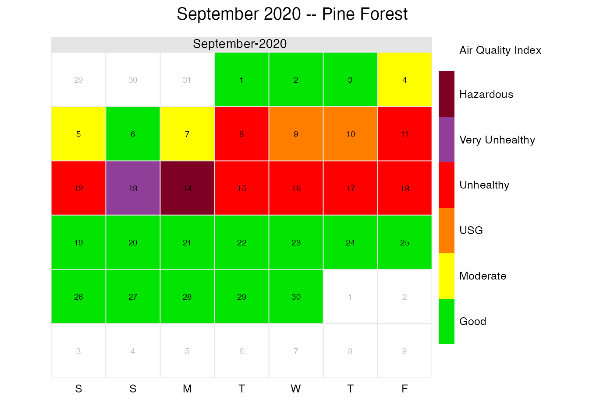
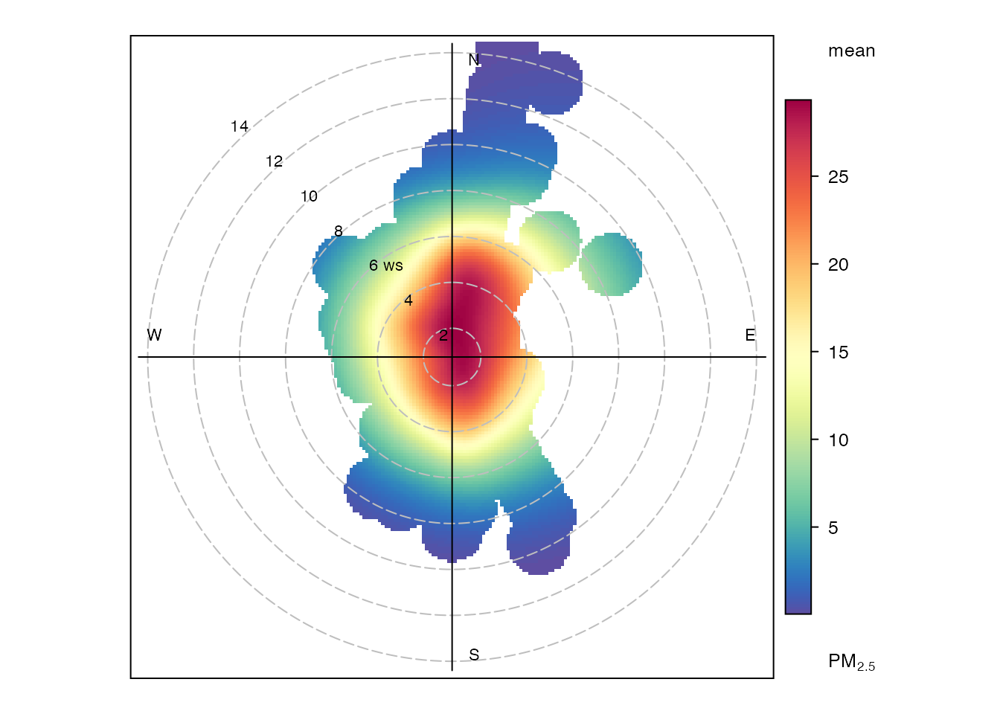
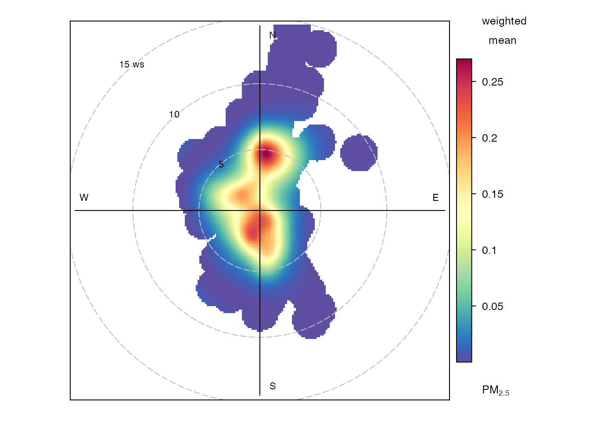
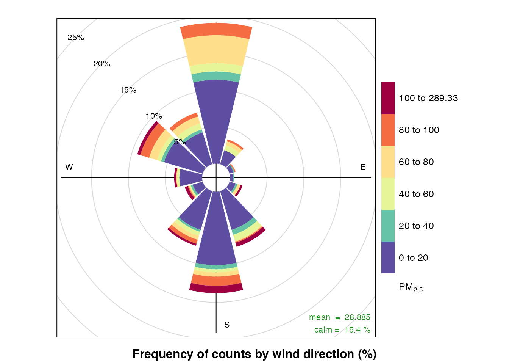
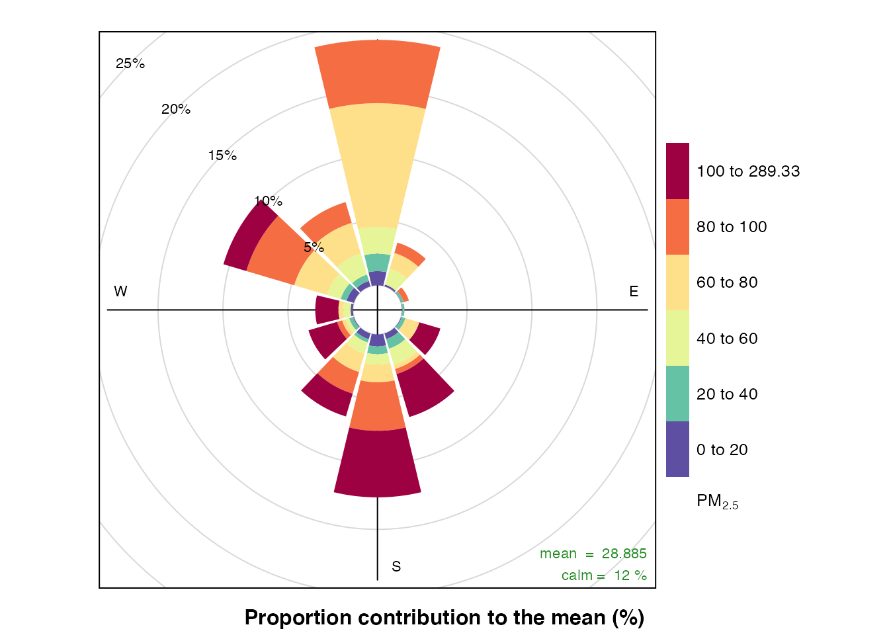
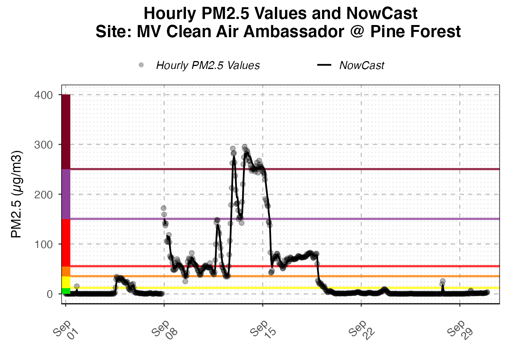
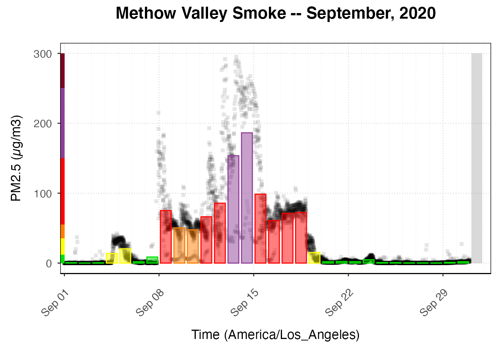

vignettes/articles/MVCAA_Tutorial_4.Rmd
MVCAA_Tutorial_4.RmdThis tutorial demonstrates how to analyze ‘airsensor’ data using functions tailored to that data type, all of which have names beginning with sensor_. In order to run the code in this tutorial you must have followed the instructions in Tutorials 1-3 and created a directory with ‘pas’, ‘pat’, and ‘airsensor’ data files for the Methow Valley. Target audiences include grad students, researchers and any member of the public concerned about air quality and comfortable working with R and RStudio.
Tutorials in this series include:
Our goal in this tutorial is to explore a variety of sensor_~() functions available in the AirSensor package and to explain their most important arguments and the interpretation of output graphics.
# Methow Valley local data archive
# ----- Setup ------------------------------------------------------------------
library(AirSensor)
# Use the default archiveDir unless it is already defined
if ( !exists("archiveDir") ) {
archiveDir <- file.path("~/Data/MVCAA")
}
# Load previously generated airsensor data
airsensorList <- get(load(file.path(archiveDir,"airsensorList.rda")))
# Print site names and associated ids
sapply(airsensorList, function(x) { return(x$meta$label) }) ## ab5dca99422f2c0d_13669
## "MV Clean Air Ambassador @ Balky Hill"
## f6c44edd41c941c7_10182
## "MV Clean Air Ambassador @ Benson Creek"
## 49215ad49d1a87e3_10188
## "MV Clean Air Ambassador @ Bush School"
## f736fd3fb21fc4da_13667
## "MV Clean Air Ambassador @ Gunn Ranch"
## db5d6b3b79f5830e_39237
## "MV Clean Air Ambassador @ Liberty Bell High School"
## 4f19d256e1787973_10166
## "MV Clean Air Ambassador @ Lower Studhorse"
## f592adb5067ad9d3_13675
## "MV Clean Air Ambassador @ McFarland Creek "
## 4a47b9252e16e558_15077
## "MV Clean Air Ambassador @ Methow Estates"
## 0cbfeb2ce4c1553c_13661
## "MV Clean Air Ambassador @ Pine Forest "
## 2e3b5ceea86a885b_10168
## "MV Clean Air Ambassador @ Upper Beaver Creek"
## f96deab8c29aa42b_10134
## "MV Clean Air Ambassador @ Willowbrook Farm"
## 96b108298883ca47_64441
## "MV Clean Air Ambassador-Little Cougar"
# Pull out each sensor as a separate 'airsensor' object
Balky_Hill <- airsensorList[["ab5dca99422f2c0d_13669"]]
Bush_School <- airsensorList[["49215ad49d1a87e3_10188"]]
Liberty_School <- airsensorList[["db5d6b3b79f5830e_39237"]] # good
McFarland_Creek <- airsensorList[["f592adb5067ad9d3_13675"]]
Pine_Forest <- airsensorList[["0cbfeb2ce4c1553c_13661"]] # great
Willowbrook_Farm <- airsensorList[["f96deab8c29aa42b_10134"]] # poor
Benson_Creek <- airsensorList[["f6c44edd41c941c7_10182"]]
Gunn_Ranch <- airsensorList[["f736fd3fb21fc4da_13667"]]
Lower_Studhorse <- airsensorList[["4f19d256e1787973_10166"]]
Methow_Estates <- airsensorList[["4a47b9252e16e558_15077"]]
Beaver_Creek <- airsensorList[["2e3b5ceea86a885b_10168"]]
Little_Cougar <- airsensorList[["96b108298883ca47_64441"]]The sensor_calendarPlot() function plots PM2.5 concentration in a calendar format. This function is prepares data and ultimately calls the openair package calendarPlot() function.
From the final plot in Tutorial 3, it is clear that the sensor labeled “Pine Forest” has the most complete data after hourly aggregation. Let’s look at air quality impacts at “Pine Forest” using the US EPA Air Quality Index colors
(colors = "aqi"). We expect that the PM2.5 values reported by the sensor will be exaggerated to some extent. Nevertheless, the calendar plot will still show us which days during September 2020 had the worst PM2.5 levels, putting the health of Methow Valley residents at risk.
# Create a calendar plot for Pine_Forest
sensor_calendarPlot(
sensor = Pine_Forest,
colors = "aqi",
title = "September 2020 -- Pine Forest"
)
From the calendar plot we see that the September 8-18 were all days of unhealthy smoke levels with September 13-14 being the worst.
The sensor_polarPlot() function wraps openair::polarPlot() which plots PM2.5 concentration as a function of wind speed and direction. This type of plot can be helpful in determining the source of a pollutant.
If no wind data is specified, (default) windData = NULL, the function uses wind data from the nearest airport station obtained with the worldmet package.
The color scale for some of the statistics is only to provide an indication of overall pattern and should not be interpreted in concentration units (µg/m3). (See the documentation for openair::polarPlot() for details.)
# Create a polar plot for Liberty School
polar_plot <- sensor_polarPlot(
sensor = Liberty_School
)
The plot shows that there is evidence of increasing PM25 (smoke) concentrations at low wind speeds from all direction with more smoke coming from from the north. You can use a function from the PWFSLSmoke package to create a local map where you will see that the Methow Valley runs primarily north-south at Liberty Bell High School.
PWFSLSmoke::monitor_leaflet(Liberty_School)To see the wind speed/direction conditions that dominate the overall mean, we can use statistic = "weighted_mean". As we can see from the plot below, wind from N with a speed between 6 and 4 m/s carries the highest PM25 concentration.
This plot might suggest that wildfire smoke that entered the valley moved up and down the valley as part of typical, diurnal valley airflow patterns.
# Create a polar plot for Pine Forest using the weighted mean
polar_plot <- sensor_polarPlot(
sensor = Pine_Forest,
statistic = "weighted_mean"
)
The sensor_pollutionRose() function wraps openair::pollutionRose() which plots a traditional wind rose plot for wind direction and PM2.5.
# Create a pollution rose plot for Liberty School using the proportion of the
# frequency of measurements
pollution_rose <- sensor_pollutionRose(
sensor = Liberty_School
)
Highest PM25 concentrations are mostly associated with southerly winds. However the largest proportion of PM25 concentrations is associated with northerly winds. By setting statistic = "prop.mean" , we can see that northerly winds contribute the most to overall concentrations as shown in the plot below.
# Create a pollution rose plot for Liberty School using the relative contribution
# of the measurements to the mean
sensor_pollutionRose(
sensor = Liberty_School,
statistic = "prop.mean"
)
More examples and explanations on how to interpret pollution rose plots can be found in “Section 5 Wind and Pollution Roses” of The Openair Book.
The sensor_extractData() and sensor_extractMeta() functions are convenient wrappers for extracting the airsensor meta and data dataframes. These functions are designed to be useful when manipulating data in an R pipeline using %>%.
In the example below, we will use data manipulation functions from PWFSLSmoke and dplyr to calculate some daily statistics for Pine Forest.
# Use MazamaCoreUtils::dateRange() to ensure we get POSIXct times in the local timezone
dateRange <- MazamaCoreUtils::dateRange(
startdate = 20200906,
enddate = 20200920,
timezone = "America/Los_Angeles"
)
# Show daily max for Pine Forest
Pine_Forest %>%
PWFSLSmoke::monitor_subset(tlim = dateRange) %>%
PWFSLSmoke::monitor_dailyStatistic(FUN = max) %>%
sensor_extractData() %>%
dplyr::mutate_if(is.numeric, round, 0)## datetime 0cbfeb2ce4c1553c_13661
## 1 2020-09-06 3
## 2 2020-09-07 172
## 3 2020-09-08 159
## 4 2020-09-09 82
## 5 2020-09-10 72
## 6 2020-09-11 149
## 7 2020-09-12 292
## 8 2020-09-13 295
## 9 2020-09-14 273
## 10 2020-09-15 250
## 11 2020-09-16 81
## 12 2020-09-17 76
## 13 2020-09-18 83
## 14 2020-09-19 22
# Show daily averages for Pine Forest
Pine_Forest %>%
PWFSLSmoke::monitor_subset(tlim = dateRange) %>%
PWFSLSmoke::monitor_dailyStatistic(FUN = mean) %>%
sensor_extractData() %>%
dplyr::mutate_if(is.numeric, round, 0)## datetime 0cbfeb2ce4c1553c_13661
## 1 2020-09-06 1
## 2 2020-09-07 8
## 3 2020-09-08 86
## 4 2020-09-09 53
## 5 2020-09-10 53
## 6 2020-09-11 76
## 7 2020-09-12 107
## 8 2020-09-13 219
## 9 2020-09-14 255
## 10 2020-09-15 136
## 11 2020-09-16 65
## 12 2020-09-17 72
## 13 2020-09-18 73
## 14 2020-09-19 11
# Show daily standard deviations for Pine Forest
Pine_Forest %>%
PWFSLSmoke::monitor_subset(tlim = dateRange) %>%
PWFSLSmoke::monitor_dailyStatistic(FUN = sd) %>%
sensor_extractData() %>%
dplyr::mutate_if(is.numeric, round, 1)## datetime 0cbfeb2ce4c1553c_13661
## 1 2020-09-06 0.7
## 2 2020-09-07 36.6
## 3 2020-09-08 35.0
## 4 2020-09-09 13.4
## 5 2020-09-10 8.9
## 6 2020-09-11 39.1
## 7 2020-09-12 91.2
## 8 2020-09-13 55.7
## 9 2020-09-14 7.8
## 10 2020-09-15 73.0
## 11 2020-09-16 8.5
## 12 2020-09-17 2.2
## 13 2020-09-18 15.3
## 14 2020-09-19 6.7All ‘airsensor’ objects are compatible with ‘monitor’ functions from the PWFSLSmoke package as well as functions from the AirMonitorPlots package for generating ggplot2 graphics.
The following examples are designed to encourage further exploration of those packages.
library(PWFSLSmoke)
library(ggplot2)
library(AirMonitorPlots)
# "publication-ready" time-series plot
AirMonitorPlots::monitor_ggTimeseries(Pine_Forest)
# Custom plot showing data + daily averages for the entire Valley
airsensorList %>%
PWFSLSmoke::monitor_combine() %>%
AirMonitorPlots::ggplot_pm25Timeseries() +
ggplot2::ggtitle("Methow Valley Smoke -- September, 2020") +
AirMonitorPlots::geom_pm25Points(shape = "square", alpha = .1) +
AirMonitorPlots::stat_dailyAQCategory(alpha = .5) +
ggplot2::scale_y_continuous(limits = c(0, 300)) +
AirMonitorPlots::custom_aqiStackedBar(width = 0.01) 
Best of luck assessing air quality in your community!